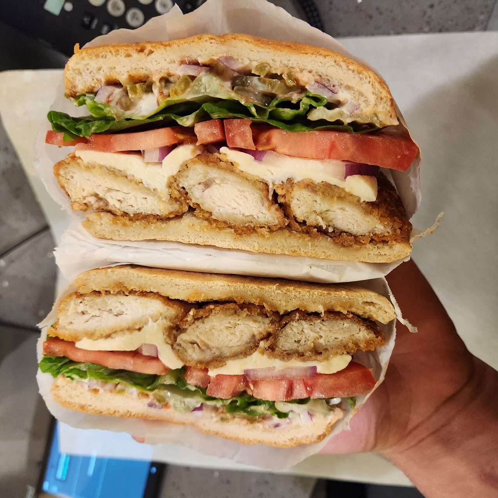

Seniore's crispy chicken sandwich recipe

A chicken sandwich so good you'll never return to popeye's or chick fil a
Working at a pizza place that served all kinds of pizzas along with sandwiches and pastas gave me the opposite dilemma from the pizza recipe
Instead of being unable to decide what I wanted to eat due to limited options, now my problem was I had too many options
Even though I am not a picky eater I could not stop myself from having this sandwich for lunch time and time again
It became my comfort food when I was working because I knew whenever I made this sandwich I could rely on it being extremely tasty and satisfying my hunger every time
Below I have included the recipe so you can indulge yourself in this delectable sandwich along with me
Ingredients
- Frozen chicken tenders
- Swiss cheese
- French roll
- Tomatoes
- Lettuce
- Onions
- Pickles
- Mayonnaise
Instructions
- First you get your oil hot enough and drop your chicken in until cooked
- Next you will take your cooked chicken and put it on your french roll with a blanket of swiss cheese on top
- Then you take your bread,chicken and cheese and put it in the oven with the french roll open
- Once your cheese is melted and your french roll becomes toasted you take your veggies and apply them one by one making sure to add the mayonnaise and pickles directly on the roll
- Lastly you close your sandwich cut it in half and it is finally ready to be enjoyed
Go back to main page